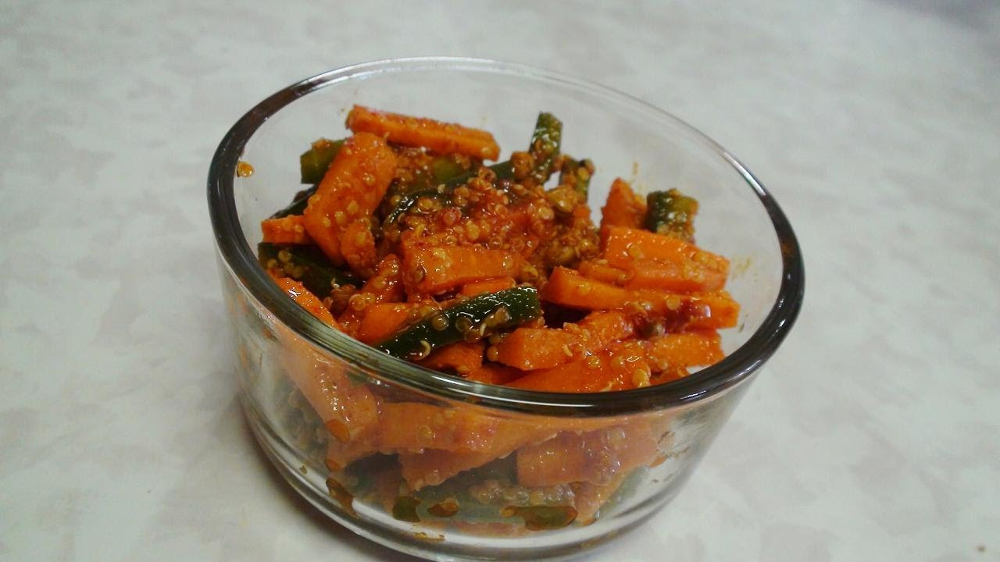

Ingredients:
1)3 cups water
2)230gms carrots (scraped and cut into 2"long sticks)
3)11/2 tbsp mustard seeds
4)1/2 tsp chili powder
5)1/8 th tsp each ground mace, cloves and cardamom
6)2tsp salt
7)1/4 th cup shredded jaggery (gur)
8)1/3rd cup mustard oil
How to make Carrot Pickle (Gaajar Ka Achar) :
1)Boil the water in 2-litre saucepan. Add carrots and blanch for a minute.
2)Drain the water and then spread carrots on a clean cloth and sundry (or spread them on a towel lined cookie tray and air dry in an oven (200-degree Fahrenheit) for an hour).
3)In a bowl mix the mace, cloves, cardamom, salt and jaggery.
4)Add the carrots and toss to mix. Transfer to a sterilized glass jar.
5)Pour the mustard oil into a small saucepan and place it over a moderate heat. As soon as oil begins to smoke remove it from the heat and cool it for 4 minutes, then pour it into the jar and cover it with a clean cloth.
6)Set the jar in sunlight for 13-14 days, bringing it indoor evrynight. Shake the jar two or three times daily.